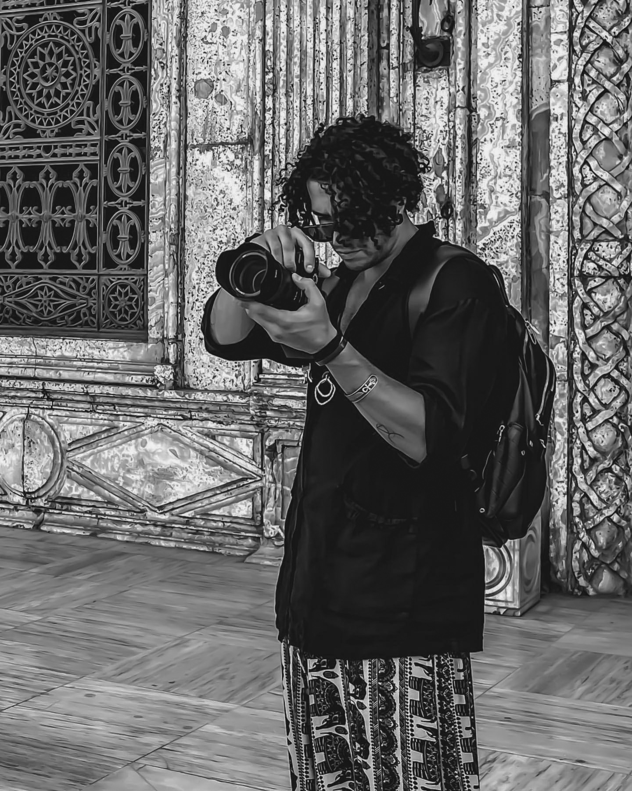

About Me
Hi, I’m Adriano.
I am a wedding photographer passionate about capturing beautiful timeless moments.
After years of working in corporate photography, I left to pursue more creative ventures where my love for visual storytelling could flourish.
I have traveled around the world and worked in many international environments across various cultures.
My photography focuses on authentic and raw emotions;
That is why I strive to make my clients feel comfortable
and relaxed on and off camera, so that every shot reflects their true character.